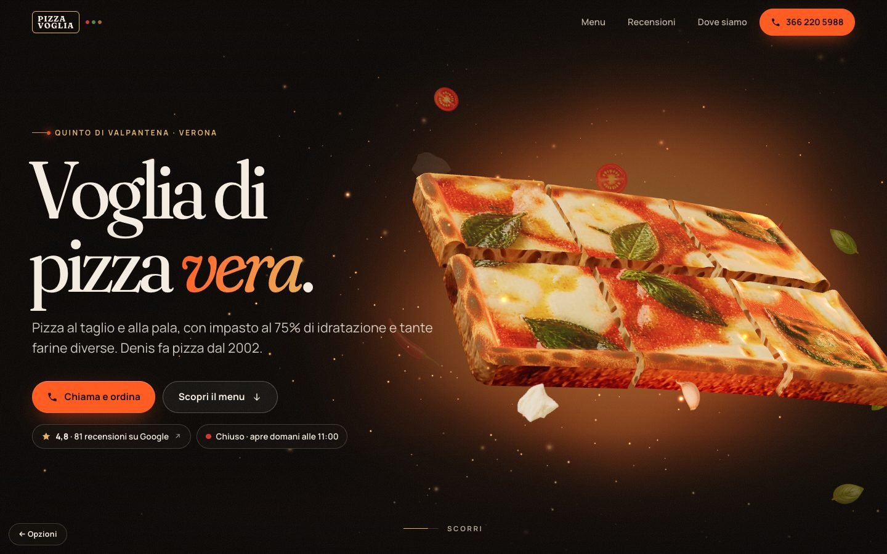
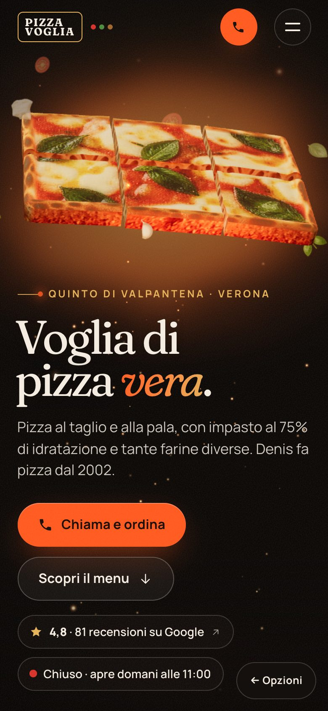
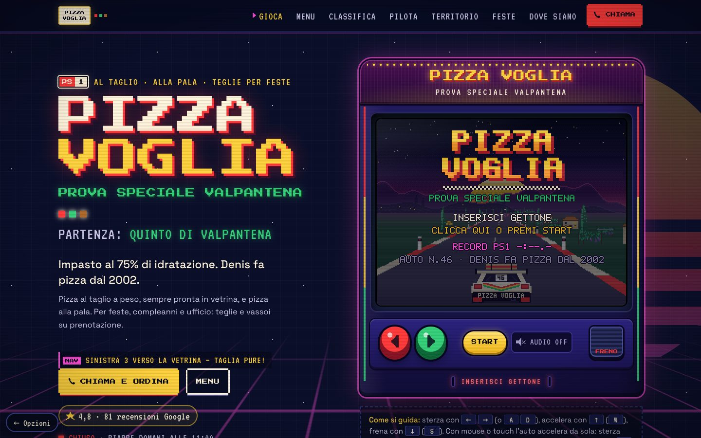
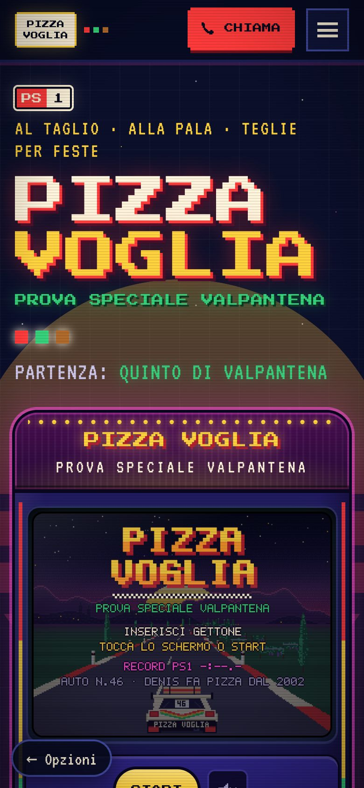
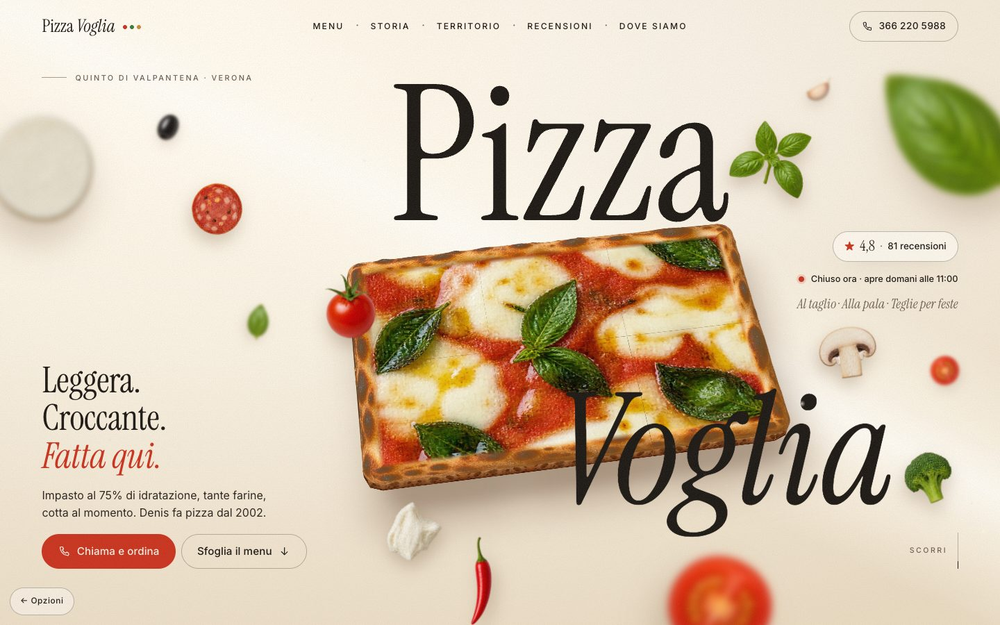
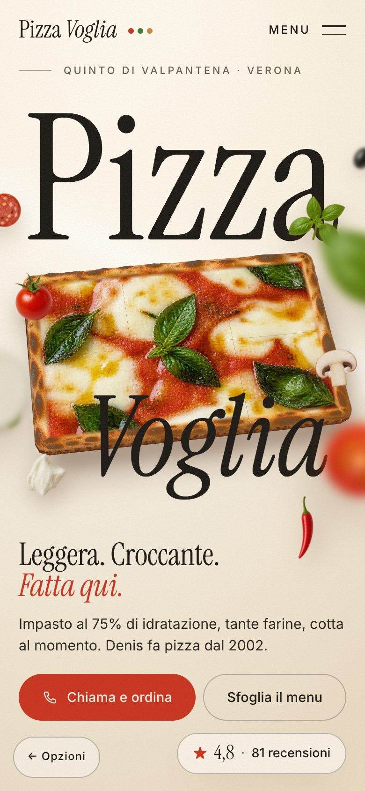

Option A
Forno — cinematic 3D
A pizza revealed like a luxury product launch: warm black, glowing embers, a real-time 3D teglia that tilts with your mouse and splits into its square slices — al taglio — as you scroll.
- Three.js hero: 3D pizza in teglia with real airy crumb on the cut sides, embers, floating ingredients
- Scroll-driven camera moves, animated counters (75% · 2002 · 4.8★)
- Live "open now" status, dark map, menu with hover image reveal


Option B
Prova Speciale — 80s rally arcade
Denis's passions in one page: 80s rally, arcade neon and the Valpantena. The hero is a playable pseudo-3D rally stage from Quinto up to Lessinia — car #46 with a pizza box on the roof, collect Monte Veronese and broccolo di Novaglie, dodge the pineapples, beat the stage time.
- OutRun-style rally game: hairpins, co-driver pace notes, checkpoints, best time (keyboard + touch)
- Page as rally stages PS1–PS7: menu, stage ranking (real Google data), the driver, territory, service for parties
- "Valpantena, terra di rally" — local pride baked in; memorable and very shareable


Option C
Valpantena — sunlit editorial
An Italian food magazine come alive: warm light, flour in the air, ingredients floating at different depths around the teglia — its slices and the ingredients burst outward as you scroll.
- Layered depth parallax hero (mouse + gyro), flour-dust light beam
- Horizontal-scroll story: 2002 · 75% · flours · local ingredients
- Magazine-style menu and reviews, warm sepia map